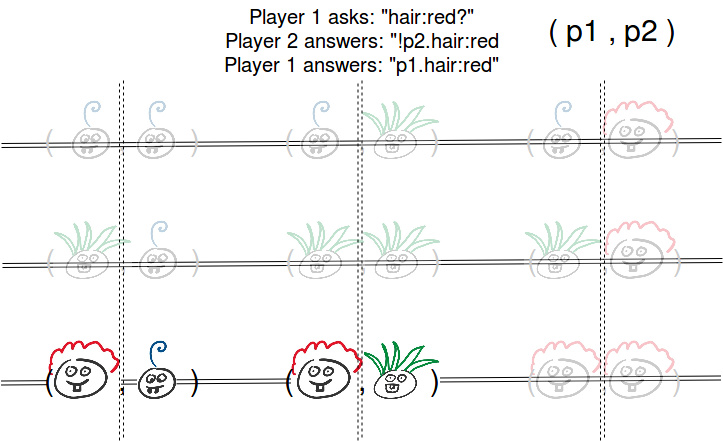

In the game of Guess Who?, two opposing players pick an avatar from a given set of characters. The characters that players can choose have various attributes such as their hair colour, or whether they are wearing glasses. It is up to the players to guess what character their opponent has chosen in order to win the game. Players may ask binary questions about the attributes in order to gain information on which avatar the opponent has chosen.
The variant that is analysed here is a symmetric Guess Who?. Here, once a player asks a question about an attribute, both players have to say whether or not their character satisfies the mentioned attribute, truthfully. The implications of the symmetric gameplay is that players may be unable to ask direct questions when it would reveal which character they are playing themselves. Thus, as a player, you would need to know what information your opponent has about your avatar in order to prevent your question from giving away your avatar.
The game is analysed here using epistemic logic. We use the knowledge
operator K to represent what knowledge is held by each player, which is shown in the game console.
A Kripke model in S5 is shown below. Each world consists of a pair of characters such that each player has chosen a character. Since each player knows what character they have, they know which characters they do not have. Therefore, player 1 can only access worlds where the character for player 1 is the same as the one he chose. This means that worlds have connections to each other world where the local state is preserved, much like the distributed systems used in chapt. 1.8, "Epistemic Logic for AI and Computer Science" by Meyer and van der Hoek (1995).

The system shown above uses double lines to indicate that every state along that line can be reached from any other state reached. Notably, states along these lines can make 'jumps' to another state along the same line. Given that players know which attributes their character has, players may only access states in which this chosen character is the same. Thus, there is a horizontal and vertical double line for player one and two respectively, in order to access the reachable states.
We have indicated the propositions that are true in a world by showing the avatar for each player. The avatars, here, form a specification on propositions that are true and false by visualising the attributes of the characters, such as red hair and having two teeth. Then, the visualisation marks whether a given proposition is true or false. We use propositions for the attributes hair (red, green or blue), teeth (characters have either 0, 1 or 2 teeth), crosseyed (characters either have normal centred eyes or not) and character name. A proposition is displayed in the consoles as for example: p1.hair:red, which would indicate that player 1's character has red hair. All character names are listed in the help section.
Given that players have access to the local states in the above Kripke model, indeed, players have knowledge about the avatar that they have themselves. However, relations for a local state exists to all of the worlds that have varying avatars for the opponent. So, players do not know which avatar their opponent has until they have asked questions.
So, what happens when a player asks a question? That is, a player makes a statement that from that moment on, should be true. To account for this, we borrow restrictions from announcement logic. This logic introduces restrictions on the Kripke model such that any (always truthful) answer players give to a question will be true in the Kripke model. For example, when a players asks whether an avatars hair is red and both players answer no, the Kripke model is restricted to only the worlds where both player's avatar is not red. Any relations agents have to the worlds with red hair are also not considered. When propositions are evaluated in the restricted model, they may return different valuations. That is, if all but one character has red hair then both players know exactly which characters their opponent are playing in the restricted model, even though the restriction only disregards worlds where avatars did not have red hair. Using this logic, a game of Guess Who? becomes a series of restrictions on the Kripke model until a player has access to only one world and thereby knows his opponent's avatar. An example of a model restriction following the question whether hair is red for each avatar is shown below. This model also shows the question giving more information to player 2, who immediately knows which avatar player 1 has in the restricted model (using only 3 characters).
Given the logic and Kripke model, then, what is the best question an agent can ask? We find that new questions can decrease the number of avatars an opponent could possibly have. For a player, a question is intended to gain the most information about his opponent's avatar while giving away the least amount of information about his own avatar. We implement this strategy by counting the possible world in the restricted Kripke model, following the question that have been asked. That is, the most informative question about the opponent is the one that has the largest reduction in possible avatars of the opponent after restricting the model to the given question. Similarly, the safest question for you has the smallest reduction in worlds that you believe the opponent holds possible for you. We weigh safe and informative equally much in making a decision, as further explained in the Project implementation section.
At the top of the page you will find the interactive game of Guess Who. By pressing 'next step', the game advances by one step, i.e. one player asks a question and each player answers this question with regard to their chosen avatar. Both players' knowledge about their opponent's avatar will be updated, and the solver tries to prove new propositions using the rules of the game. Note that pressing 'reset game' will reset all knowledge and chosen avatars. Pressing 'help me' should bring you to this section.
Meet the characters -- the image above tells you who's who, in case you couldn't tell from the character attributes in the interactive game.
In the game, two players compete with each other. Player 1 tries to ask questions in a smart way by using the available knowledge. Player 2 does not take the knowledge into account and asks random questions. A custom logic prover is implemented which takes the rules of the game, as seen in the console, and proves new knowledge per agent once a question is answered. The knowledge is implemented in a simplified way. Because questions are announced publicly, both of the players know the answers. They also know that the other player knows the same things, etc. Essentially, all knowledge in the game is common knowledge. Therefore, we don't use the K operators in representing the knowledge. This makes the prover less complex. When reasoning about what decision to take, a player takes each possible question and reasons about what the result of the possible answers (true or false) will be on the possible characters that are left. It tries to find the question that will eliminate as many characters as possible regardless of whether the answer is true or false, but it also takes into account how many characters are left for the player itself after answering its own question.